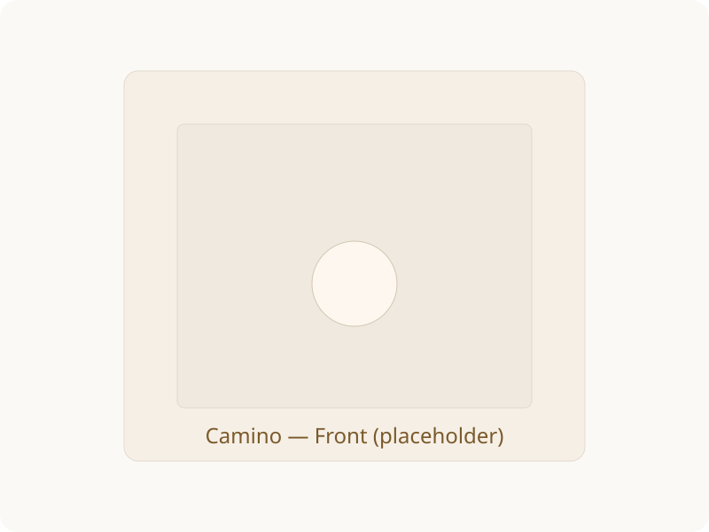
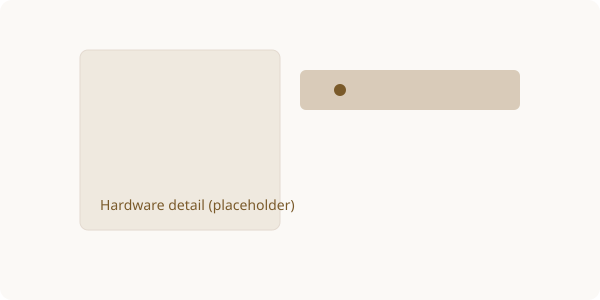

Modern folding cajon made for traveling musicians
High-quality Baltic birch, premium hardware, adjustable snare springs — folds flat for easy transport.

Features
- High-quality Baltic birch construction with natural finish
- High-end hinges and components for long life
- Adjustable snare springs for tone customization
- Easy to assemble and fold — designed for travel
- Compact carry bag included
Specifications
Dimensions (assembled)
47 × 30 × 29 cm
Dimensions (folded)
47 × 30 × 7 cm
Material
Baltic birch
Included
Carry bag, mounting hardware
Assembly & Safety
- Unpack the cajon and lay out all components on a soft surface.
- Unfold the panels until they click into the primary hinge positions.
- Install and tighten all supplied fixings and fasteners using the included tools.
- Adjust snare springs to desired tension for your preferred tone.
- Place the cajon on a stable, level surface before playing.
Warning: Do not sit on the cajon unless it is fully assembled and all fixings are securely fastened and tightened.
Gallery (placeholders)

FAQ
- Is the cajon suitable for professional use?
- Yes — built from high-quality Baltic birch and premium hardware designed for gigging musicians.
- How long does assembly take?
- Typical assembly takes 3–7 minutes using the included fastenings and tools.
- Can I adjust the snare tension?
- Yes — the cajon has adjustable snare springs so you can fine-tune the tone.
- Is the bag included?
- Yes — a compact carry bag is included for transport.
- What are the dimensions?
- Assembled: 47 × 30 × 29 cm. Folded: 47 × 30 × 7 cm.
- Where is it made?
- Handmade in Europe — produced in Latvia.
Purchase
Interested in buying? Click the link below to purchase on Vinted.
(Replace the link above with your product's Vinted listing URL.)